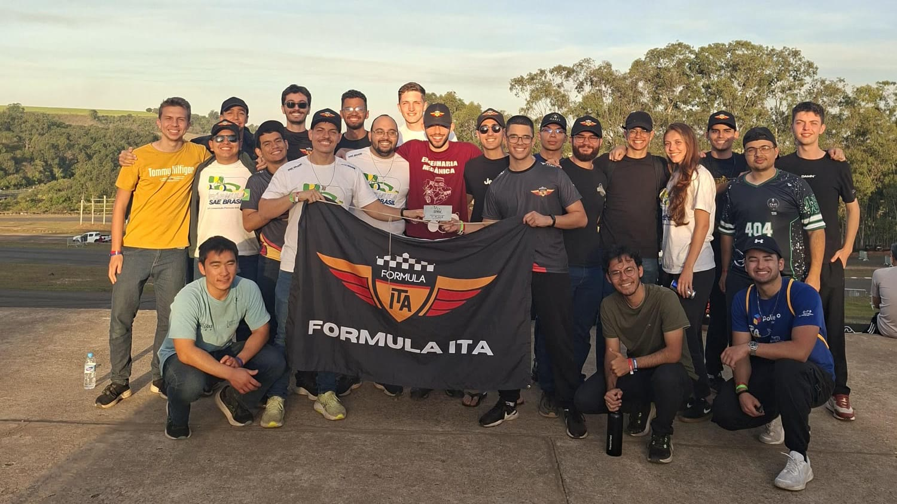

The car stays behind
Inspection opened with the BMS still unfinished. I decided to keep the car where we were staying and finish the electrical work there, instead of taking an incomplete car to the inspectors.
We raised the largest sponsorship the team had seen and got 28 people to the event. The car reached the inspection line on the last of four days, which left no time for the problem we found there.

As captain I handled the work around the car: presenting the team to sponsors, the budget, the schedule, recruitment, and keeping six subteams on the same deadline. That season we closed over R$50k with our main sponsor, the largest sponsorship the team had received, and the EITA-01 made its first test drive. The test drive was a team result, and the electrical subteam did most of the work.
The weeks before the competition were the hardest part of the role. Manufacturing was not finished, the car had only started running, and I was also organizing travel, housing and food for 28 people. When we arrived in Piracicaba, the electrical system still had open items. The main one was the BMS.
Inspection opened with the BMS still unfinished. I decided to keep the car where we were staying and finish the electrical work there, instead of taking an incomplete car to the inspectors.
With time running out, we took the car to inspection. Other teams were ahead of us, and the wait took a large part of the day. Once our turn came, the car passed the chassis inspection and many of the mechanical checks.
Then a check failed. The rules require a template to slide through the cockpit along the steering column, down to a set distance from the front bulkhead, and the driver's electronics box was in its way. Around the same time, an electronic circuit board burned out.
We fixed the electronics box. The replacement board was bought, but we could not get it installed and working in time. From the moment we found the problem we had less than a day, and the line took most of it. We never got back in, and the car was cut at technical inspection.
The two problems needed different people, so I split the team. I led the fix on the electronics box, and our electrical director took the burned board, including buying the replacement. Both groups worked in the middle of the inspection area, with the judges around us. The judges do not extend the deadline for any team, so the only thing left to change was how fast each fix went.
I would not hold the car back again. Taking it to inspection on the first days, unfinished, would have shown us every problem at once while there was still time to work on them in parallel. It would have been more chaotic and might not have worked, but we would have found the template problem with days left instead of hours.
The template failure itself came from our process. The electronics box was never in the CAD model. It was added late, during manufacturing, and nobody checked it against the rules. The team now runs an inspection checklist before manufacturing starts, while parts can still be changed on screen.
At the same competition, the team won the Business Case event for the second year in a row. A year later, the same EITA-01 ran the acceleration and endurance tests that calibrated my lap-time model for the EITA-02.